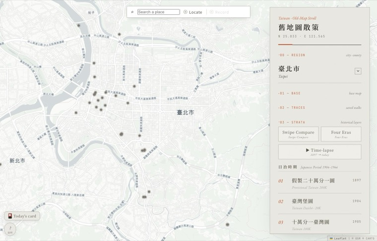
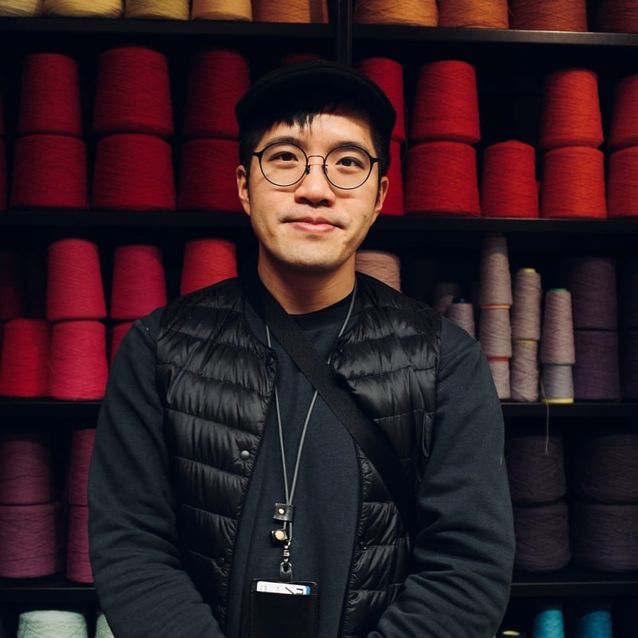
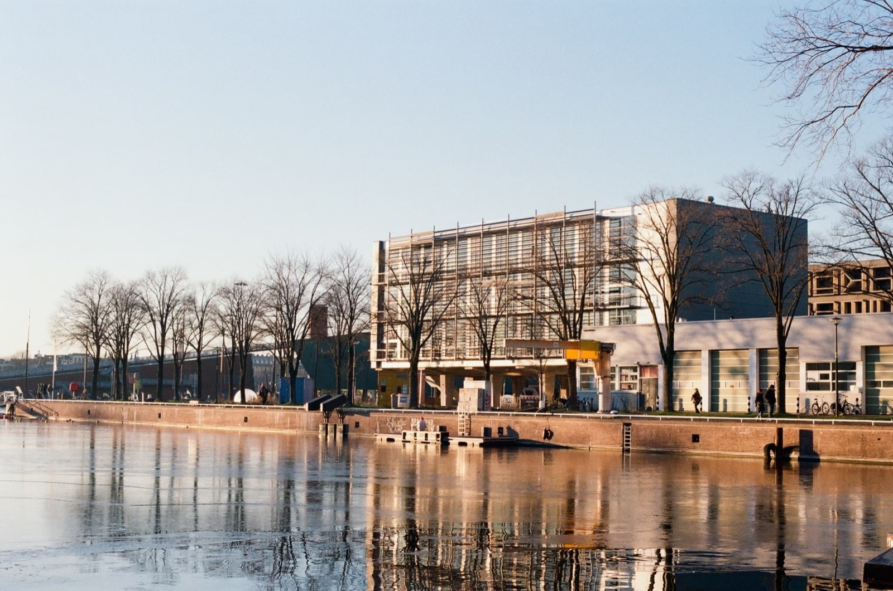
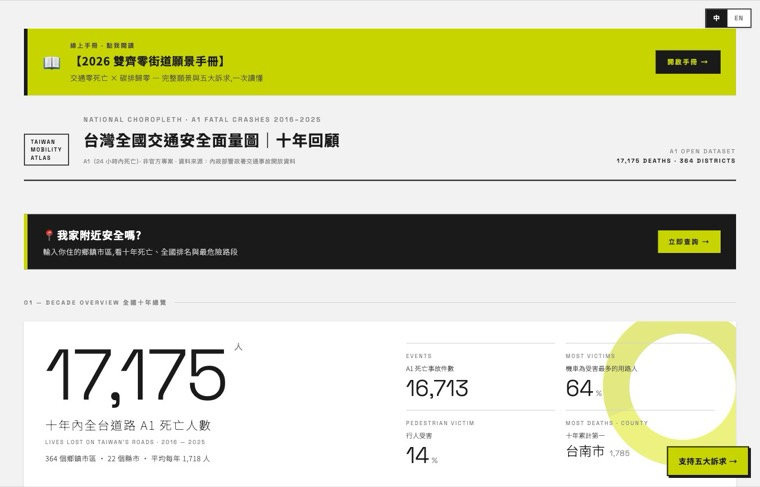
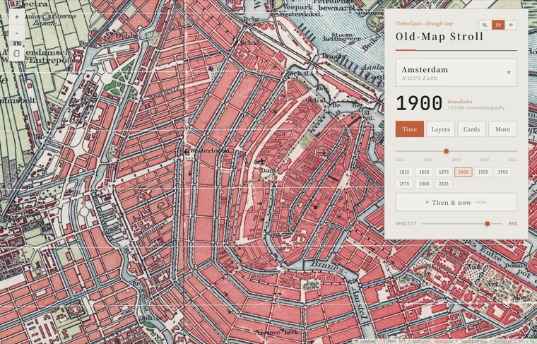
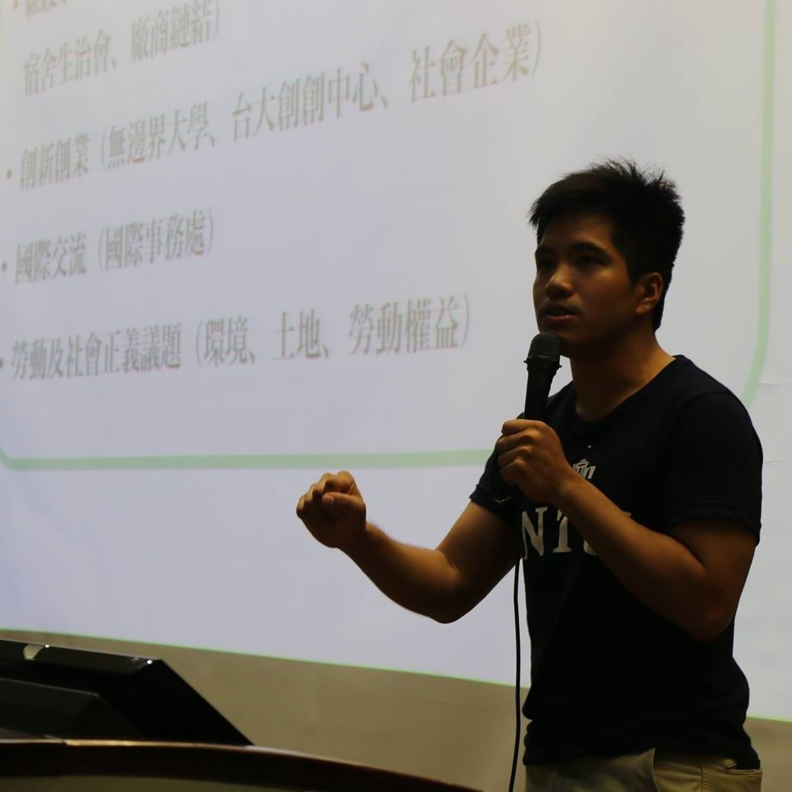
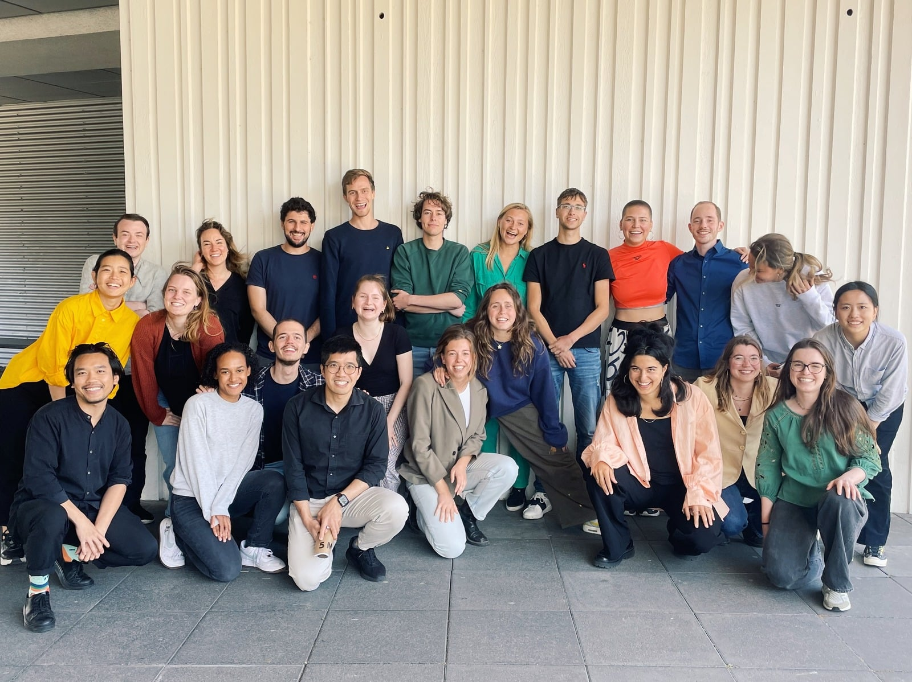

Urban Researcher & Advocate
Yun-Ching
Wu
Spatial. Social. Impact-driven.
An urban researcher and advocate with a strong foundation in spatial planning and social-technical policies. Specialised in mixed-methods research, combining data-driven insights with qualitative narratives to analyse complex sustainability and mobility transition challenges. Based in Delft, the Netherlands.

About
01 / 06
Reading the city at street level
Planning training, public-sector practice, cross-border research — and an advocacy junction in between.
My work moves between three roles: researcher, planner, and advocate. I was trained in planning at National Taiwan University, managed urban regeneration and social housing projects for the Taipei City Government, and then moved to the Netherlands for a joint master's in Metropolitan Analysis, Design and Engineering (MADE) at TU Delft, Wageningen University and the AMS Institute in Amsterdam.
The questions stay the same wherever I am: how does a street get decided, whose mobility gets prioritised, and can citizens take part in those decisions in their own language? Lately I use open data, GIS and generative AI to translate pedestrian environments, road safety and healthy-city planning methods into interfaces that ordinary people can read and use.
Since 2024 I have co-founded Vision Zero Taiwan, where I serve as Executive Supervisor, working on mobility transition policy research and international collaboration.

Focus
02 / 06
Four questions I keep working on
Where research, design and advocacy meet.
01
Mobility transition
From car-centred to people-centred streets: policy instruments, street experiments, and institutional design that actually lands.
移動轉型
02
Road safety
Using a Vision Zero frame, with data and case analysis, to identify risky junctions and the institutional gaps behind them.
道路安全
03
Healthy & proximity cities
Planning methods for the 10-minute city — reading the Utrecht Spatial Strategy 2040 to see how accessibility gets written into a plan.
健康與十五分鐘城市
04
Citizens & AI
Can open data and generative AI become a design language for citizens? My master's thesis built a citizen-AI street design assistant.
公民與 AI
Path
03 / 06
Education & experience
Experience
Vision Zero Taiwan (NPO)
Executive Supervisor & Co-Founder
Mobility transition policy research and international collaboration
Taipei, Taiwan
05.2024 — Now
Taipei City Government
Associate Engineer
Urban regeneration and social housing project management
Taipei, Taiwan
07.2020 — 09.2022
Education
TU Delft & Wageningen University
Metropolitan Analysis, Design & Engineering (joint degree)
AMS Institute, Amsterdam
The Netherlands
09.2022 — 10.2024
National Taiwan University
Building and Planning
Taipei, Taiwan
09.2015 — 01.2019
Awards & fellowships
Government Fellowship for Overseas Study
Ministry of Education, Taiwan
09.2022 — 09.2025
GenAI in the Fly Competition — 2nd place, Scholar Category
TU Delft Library
12.2024
Languages & skills
LanguagesMandarin (native) · English (professional) · Dutch & Japanese (A1–A2)
TechnicalR, Python, GIS, Canva, and Adobe design tools
CertificatesStreet Experiments for Sustainable and Resilient Cities · Sustainable Urban Development · Advanced QGIS Analysis with AI and Machine Learning
Projects
04 / 06
Turning data into a city you can read
Maps, prototypes and tools — built from open data, GIS and a bit of curiosity.
Paris Social Housing Map
A map presenting the Parisian city plan (PLUb), reading the distribution of social housing alongside the rules of the plan itself.



Writing
05 / 06
Publications & talks
2025
Developing a citizen-AI street design assistant for road safety
Chapter submitted for publication. In Data, cities and citizens: How open data revolutionizes urban and transport planning — Insights from a dialogue between Europe and Asia, TU Berlin.
Link
2025.10
Exploring healthy city and 10-minute city planning methods: A case study of the Utrecht Spatial Strategy 2040 (RSU2040)
Paper presentation. Symposium on Rethinking National Spatial Planning and Regional Revitalization, New Taipei City, Taiwan.
Link
2024
Developing a citizen AI urban street design assistant for road safety
Master's thesis, Delft University of Technology. TU Delft Repository.
Link
2019
A case study of Tainan Railway Underground Project: Decision-making processes of the urban regime
Master's thesis, National Taiwan University. National Digital Library of Theses and Dissertations in Taiwan.
Link
Belief
A street is the most public of public spaces —
it should be decided by the people who live in it.
Yun-Ching Wu
Contact
06 / 06
Let's talk research, collaboration, or cities in general
Currently in Delft, the Netherlands, and open to cross-border collaboration and joint research.
